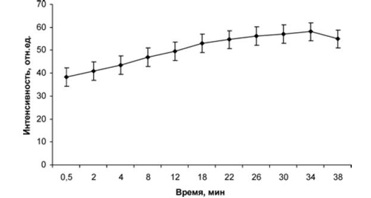
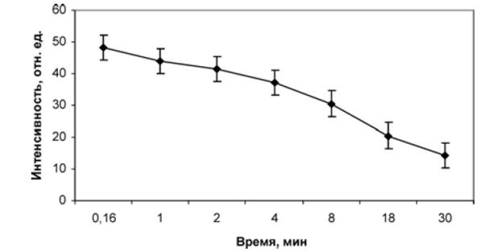
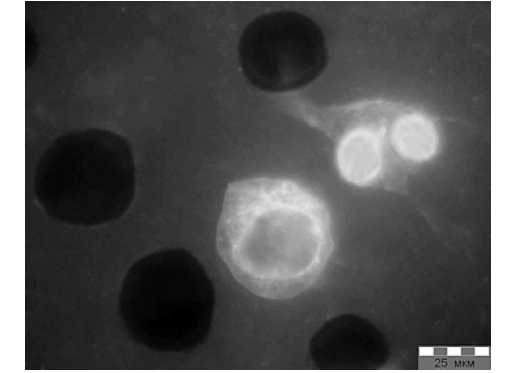
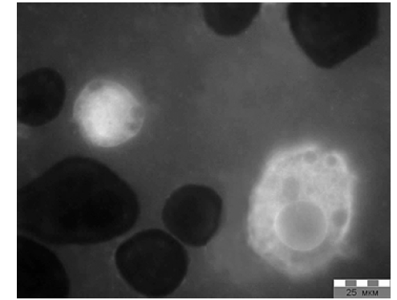
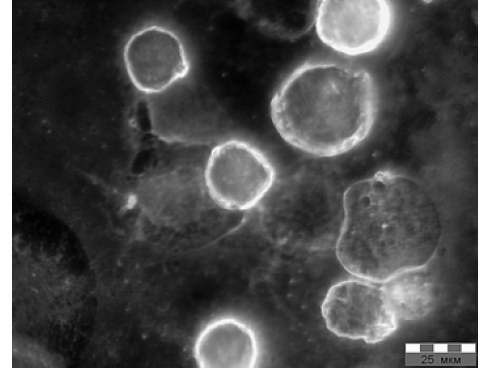

электронный
ресурс по учебной дисциплине 1-58 01 01 - "ИНЖЕНЕРНО-ПСИХОЛОГИЧЕСКОЕ ОБЕСПЕЧЕНИЕ ИНФОРМАЦИОННЫХ ТЕХНОЛОГИЙ"
|
||
| Оглавление | Программа | Теория | Практика| Контроль знаний | Об авторах | ||
Лекция 9
Нанобиоинформационные технологии
Нанобиоинформационные технологии являются одним из буpно pазвивающихся научных направлений XXI века. Pазpаботчики микросистемной техники активно сотpудничают со специалистами из медицинских учpеждений.
Особенно это касается онкологических заболеваний, которые до сих пор остаются большой проблемой во всем мире. Представлена констpукция и технология получения экспеpиментальной нанобиоинфоpмационной системы, постpоенной с применением полупроводниковых нанокристаллов. Pазpаботка предназначена для визуализации клеток и клеточных компонентов в медицинской диагностике.
В журнале "Нано- и микросистемная техника" (№ 5 и № 6,
Целью исследований явилась разработка конструкции нанобиоинформационной системы для визуализации опухолевых и стволовых клеток и клеточных компонентов. Для достижения цели необходимо было решить следующие задачи:
- разработать конструкцию и технологию получения нанобиополупроводниковой системы, с использованием которой можно осуществить визуализацию клеток в физиологических растворах;
- установить, какие из физиологических растворов для культивирования или инкубации различных типов клеток могут использоваться при работе с люминесцентными полупроводниковыми нанокристаллами;
- разработать технологию визуализации клеток, в том числе методику приготовления и анализа препаратов. Актуальность разработки обусловлена необходимостью диагностики онкологических заболеваний и разработки перспективных лекарственных препаратов с использованием стволовых клеток.
Концепция построения нанобиоинформационной системы. Разрабатываемую систему можно условно разделить на три составные части:
- информационная составляющая;
- биолого-медицинская составляющая;
- нанополупроводниковая составляющая. Информационная составляющая биосистемы основывается на флюоресценции нанокристаллов. Проникая внутрь детектируемой клетки, нанокристаллы словно окрашивают ее, заставляя светиться при облучении препарата возбуждающим светом. Важно добиться высокой специфичности получаемой информации от соединения нанокристаллов с теми или иными клетками. На этом основывается "информирование" врача о наличии тех или иных клеток при детектировании (определении) клеток в медицинской диагностике.
Биолого-медицинская составляющая наносистем заключается в специфическом "узнавании" определенного вида клеток в анализируемых образцах. Подобного рода анализы широко применяются в клинической диагностике и носят название иммунолюминесцентный, иммуноферментный и цитофлюорометрический анализы. В настоящее время эти методы медицинской диагностики имеют много ограничений, и нанокристаллы в них пока еще не имеют широкого применения.
Нанополупpоводниковая составляющая биосистемы представляет собой кристаллы А2Б6 полупроводни ков. Основной рабочий элемент этой составляющей представляет собой сложную наночастицу, состоящую из кристаллов селенида кадмия CdSe, покрытых эпитаксиальной пленкой сернистого цинка ZnS. Кристаллическая структура CdSe/ZnS фиксируется стабилизирующей пленкой. На рис. 1 (см. четвертую сторону обложки) представлено схематическое изображение единичной наночастицы.
Конструкция и технология получения нанобиополупроводниковой системы. На основании анализа специальной литературы [3—5] и исходя из результатов предварительных экспериментов [6] в качестве базового элемента люминесцентной полупроводниковой биосистемы, построенной с применением нанокристаллов, определена следующая конструкция единичной наночастицы. Назовем три составляющие компоненты конструкции:
- кристаллическое ядро из селенида кадмия размером 5—10 нм. За счет фотолюминесценции CdSe обеспечивает получение информационного оптического сигнала длиной волны приблизительно 560—580 нм;
- ядро CdSe, покрытое эпитаксиальной пленкой из сернистого цинка толщиной 2—3 монослоя. ZnS обеспечивает усиление интенсивности выходного оптического (информационного) сигнала в 3—3,5 раза по сравнению с интенсивностью люминесценции исходного ядра CdSe;
- кристаллическая структура CdSe/ZnS, покрытая пассивирующей пленкой из плотноупакованных молекул меркаптоундекановой кислоты (МУК) HS–(CH2)10–СООН. Размер нанокристаллов, покрытых пассивирующим (защитно-функциональным) покрытием с карбоксильными функциональными группами, составляет примерно 7–10 нм. Пассивирующее покрытие обеспечивает защиту кристаллического полупроводникового ядра CdSe/ZnS от воздействия физиологических растворов, предотвращая окисление CdSe, а так же обеспечивает гидрофильность (так называемую водорастворимость) нанокристаллов.
Для исследований использовались нанокристаллы CdSe, полученные методами коллоидной химии по технологии, разработанной и описанной авторами. Схемы процессов получения нанокристаллов приведены в работах. Нанокристаллы CdSe были получены по реакции взаимодействия между селеном Se и диметилкадмием Cd(CH3)2. Эпитаксиальная пленка ZnS формировалась с использованием диэтилцинка Zn(C2Н5)2. Наночастицы CdSe/ZnS имеют кристаллическую структуру, что подтверждено рентгеноструктурными исследованиями. Наночастицы состоят на 55 % (масс.) из атомов кадмия Cd, на 21 % из атомов селена Se, на 13 % из атомов цинка Zn и 11 % из атомов серы S, что зафиксировано методами рентгеноспектрального анализа.
Pезультаты исследования фотолюминесцентных свойств нанокpисталлов CdSe/ZnS
Максимум интенсивности фотолюминесценции нанокристаллов CdSe/ZnS в нашем случае приходится на длину волны 570 нм. Фотолюминесценция наночастиц может быть вызвана возбуждающим светом широкого спектра — от ультрафиолетовой до видимой части светового излучения (от 300 до 600 нм). Для снятия спектров фотолюминесценции была выбрана длина волны света возбуждения, равная 352 нм, — она соответствует первому экстремуму на спектре возбуждения. Анализ спектра фотолюминесценции ядра CdSe с эпитаксиальной пленкой ZnS показывает, что максимум интенсивности фотолюминесценции нанокристаллов CdSe/ZnS увеличивается в 3—3,5 раза по сравнению с ядром CdSe без эпитаксиального покрытия ZnS, при этом отсутствует смещение длины волны максимума фотолюминесценции. Возрастание интенсивности фотолюминесценции говорит об увеличении квантового выхода нанокристаллов (отношение излученного нанокристаллами света к поглощенному). Ширина спектра фотолюминесценции на уровне полумаксимума составляет 30 нм, что делает наночастицы хорошим объектом для применения в оптике. Спектр энергии поглощения нанокристаллов имеет малый стоксовый сдвиг (разность между пиком фотолюминесценции и пиком поглощения), он составляет около 15 нм. Таким образом, имея спектр поглощения, можно делать некоторые определенные выводы о спектре фотолюминесценции образцов нанокристаллов, и наоборот.

Рисунок 9.1 – Зависимость интенсивности фотолюминесценции от времени засвечивания ультрафиолетовым светом нанокристаллов CdSe/ZnS
Исследование фотостабильности нанокристаллов CdSe/ZnS с пассивирующим функционально-защитным покрытием показывает, что интенсивность фотолюминесценции нанокристаллов увеличивается в зависимости от времени облучения ультрафиолетовым светом по закону, близкому к линейному, но через 30 мин входит в насыщение. При этом спад интенсивности фотолюминесценции нанокристаллов начинается на сороковой минуте облучения их ультрафиолетовым светом (рис. 9.1). При облучении нанокристаллов полупроводниковым лазером в течение трех часов спада интенсивности фотолюминесценции нанокристаллов не наблюдалось.
Фотостабильность нанокристаллов селенида кадмия с эпитаксильным покрытием из сернистого цинка, определенная путем исследования динамики изменения интенсивности фотолюминесценции, не зависит от типа функционально-защитной оболочки (были исследованы нанокристаллы с оболочкой из меркаптоун- декановой кислоты, тиолполиэтиленгликоля, цистеина и глутатиона). Кроме того, на фотостабильность нанокристаллов не влияет их агрегация (образование конгломератов). Для сравнения следует отметить, что интенсивность фотолюминесценции химического флюорохрома Хехст-33342 уменьшается по линейному закону при увеличении времени облучения и в течение 20 мин снижается практически до нуля (рис. 9.2). Таким образом, использование нанокристаллов для визуализации в биомедицинской диагностике позволит увеличить продолжительность наблюдений и анализов в несколько раз. Использование полупроводниковых лазеров в люминесцентных микроскопах вместо ртутных ламп для возбуждения люминесценции сократит энергозатраты при проведении исследований.
pan>
Рисунок 9.2 – Зависимость интенсивности фотолюминесценции от вpемени засвечивания ультpафиолетовым светом флюоpохpома Хехст-33342
Физиологические растворы и клетки. Для получения клеточных суспензий (привитальных препаратов) использовали асцитную карциному Эрлиха, перевиваемую на мышах линии Af. Клетки опухоли отмывали от асцитической жидкости и ресуспензировали в физиологическом растворе. Для этого асцит центрифугировали при 1500 об./мин в течение 5 мин, асцитическую жидкость сливали, добавляли раствор Хенкса, доводя жидкость до исходного объема. Концентрация клеток в смеси составляла 150—210 млн/мл. После этого добавляли к суспензии клеток суспензию наночастиц в соотношении объема растворов 1:1. Концентрация суспензии наночастиц — 0,75 мг/мл. Время окрашивания составляло 30 мин при температуре
Для просмотра клеточных суспензий готовили прижизненные препараты типа "давленная капля" или наносили на покровное стекло каплю суспензии (клетки + наночастицы) и высушивали на воздухе. Препараты анализировали на микроскопе Leitz MPV-2 с флуоресцентным осветителем PLOEMOPAK и объективом PLAPO40X. Фильтр возбуждающего света — 370—390 нм, а фильтр флюоресценции — 520—700 нм. Препарат освещали ртутной лампой НВ0100. Снимки делали цифровой камерой Leica DC 300-F под управлением программного комплекса Leica IM-1000. Для мечения стволовых клеток использовались клеточные суспензии мезенхимальных стволовых клеток костного мозга мыши.
Результаты визуализации клеток. На рис. 9.3, 9.4 представлены микрофотографии клеток. Микрофотографии получены с использованием разработанной люминесцентной информационной биополупроводниковой системы на основе нанокристаллов CdSe/ZnS.

Рисунок 9.3 – Микрофотография клеток асцита каpциномы Эрлиха, привитальный преепарат. Делящаяся клетка (справа)

Рисунок 9.4 – Микpофотогpафия клеток асцита каpциномы Эpлиха, привитальный пpепаpат. Ядра в клетках флуоpесциpуют по-pазному
После взаимодействия опухолевых клеток с наночастицами и при воздействии на препараты светом зафиксированы следующие результаты. Число клеток опухолевого асцита, воспринявших наночастицы, составило 14—27 % по результатам разных опытов. Наночастицы проникли через клеточную мембрану и внедрились внутрь клеток. Более того, наночастицы смогли внедриться в ядра отдельных клеток. В воспринявших наночастицы клетках хорошо различается ядро (очень яркое в случае проникновения наночастиц или, наоборот, более темное, чем цитоплазма). Флуоресценция ядра часто неравномерна, иногда наблюдается более яркая тонкая полоска по контуру ядра, возможно, вследствие оседания наночастиц на ядерной оболочке; заметна яркая или темная зернистость в цитоплазме. Хорошо видны делящиеся клетки. Иногда из-за слишком яркого свечения трудно отличить ядро и цитоплазму.
При анализе мазков (рис. 9.5), высушенных на воздухе после внесения нанокристаллов в суспензии, наблюдаются:
- непрокрашенные клетки (темные);
- клетки с ярким хорошо прокрасившимся ядром и узким слоем цитоплазмы;
- клетки с темным (слабо прокрасившимся) ядром и более яркой цитоплазмой.

Рисунок 9.5 – Микрофотография клеток асцита каpциномы Эрлиха, высушенный мазок
Некоторые клетки окружены тонкой флуоресцирующей полоской. Это может быть тонкий слой хорошо прокрасившейся цитоплазмы; возможно, такой эффект дала адсорбция наночастиц на мембрану клеток. Таким образом, клеточные суспензии можно обрабатывать нанокристаллами, готовить мазки, высушивать, а затем анализировать. Необходимо отметить, что качество описанных и исследованных при- витальных препаратов лучше, чем высушенных: в последнем случае хуже просматривается структура цитоплазмы, не ясно происхождение некоторых нейшего развития. Она может быть полезна, так как предполагает после высушивания мазков применение традиционных методов окраски с применением химических флюорохромов для параллельного анализа на люминисцентном и обычном микроскопе, а также для хранения готовых препаратов.
Обработка опухолевых клеток трипсином (10 мин при комнатной температуре) влияет на их способность к поглощению нанокристаллов. Вероятно, трипсин, воздействуя на мембранные структуры клеток, не затрагивая их жизнеспособность, способствует проникновению наночастиц. Этот факт может быть важен, так как дает возможность пометить клетки по следующей схеме: окрашиваем клетки в суспензии наночастицами, используя трипсин; инкубируем клетки для восстановления нативных свойств мембраны (после этого клетка должна сохранять проникшие в нее наночастицы); затем клетки вводятся в организм, и можно проследить пути их миграции в различные органы. Наконец, зафиксированы неокрашенные клетки, которые содержатся в асцитической жидкости, но они не относятся к детектируемому в данном эксперименте виду клеток. Не воспринявшие наночастицы клетки практически не видны (не флуоресцируют).
Кроме того, в ходе экспериментов продемонстрирована возможность и адекватно зафиксирован факт визуализации стволовых клеток и клеточных компонентов. Наночастицы проникли через мембрану стволовых клеток и внедрились в них. Но в отличие от предыдущего опыта с опухолевыми клетками, наночастицы не смогли проникнуть в ядра стволовых клеток. Зафиксированы делящиеся клетки на разных стадиях деления:
- ядро еще одно, но хромосомы уже растягиваются для его деления;
- также хорошо видна клетка сразу с двумя ядрами, готовая к распаду на две разные клетки.
Актуальность разработки обусловлена необходимостью совершенствования методов клинической диагностики для раннего определения раковых, туберкулезных, сердечных и других заболеваний. Кроме того, актуальность разработки обусловлена необходимостью разработки перспективных лекарственных препаратов на стволовых клетках. Фактически разработана технология визуализации живых клеток. Установлено, что наночастицы проникают во все культивируемые клетки, степень их свечения при люминесцентной микроскопии в основном зависит от физиологического состояния клетки, концентрации и времени контакта клеток с наночастицами. Закономерности проникновения наночастиц в ядра клеток и связывания с различными клеточными органеллами требуют дальнейшего изучения. Уникальность эксперимента заключается в том, что клетки не гибнут в присутствии инородных полупроводниковых тел. Заменив фотоаппарат на видеокамеру, можно снять документальный фильм о жизни клеток в различных условиях. Кроме того, представляет интерес дальнейшее изучение возможности применения полупроводниковых наночастиц для прижизненной маркировки культур клеток различных животных и человека. Таким образом, охарактеризована конструкция и технология получения экспериментальной системы визуализации клеток, построенной с применением полупроводниковых флуоресцентных нанокристаллов селенида кадмия. Эффективность этой системыпродемонстрирована на моделях асцитной карциномы Эрлиха и мезенхимальных стволовых клеток костного мозга мыши. Результаты опытов свидетельствуют о перспективности использования полупроводниковых наночастиц при разработке методов цитологического анализа и диагностики.
Перспектива работы видится в создании относительно дешевых "лабораторий на чипе" [8]. Современные подобные монопольные разработки в США закладывают сверхприбыли при реализации таких лабораторий-чипов. Цены доходят до 50 USD за чип при их себестоимости и затратах на продажу максимум в 10—15 USD. Это позволяет говорить о том, что исследования носят не только инновационный фундаментальный характер, но и коммерческий. Создан хороший задел для разработки лабораторий на чипе с использованием полупроводниковых нанокристаллов и пористого кремния. Такая биолаборатория в состоянии работать как с растворами, содержащими биологический материал, так и непосредственно с биологическими жидкостями (например, кровью). Чип обычно имеет прямоугольные секции, имеющие капилляры, сформированные в подложке. Секции имеют размер от 10 до 100 мкм и длину от десятков микрометров до сантиметров. На макроуровне течение потока внутри каналов обычно гораздо слабее, чем на макроуровне. Это тривиально, но очень важно для смешения образцов. На макроуровне простое объединение двух каналов транспортировки между собой позволяет
Содержание
| (С) БГУИР |